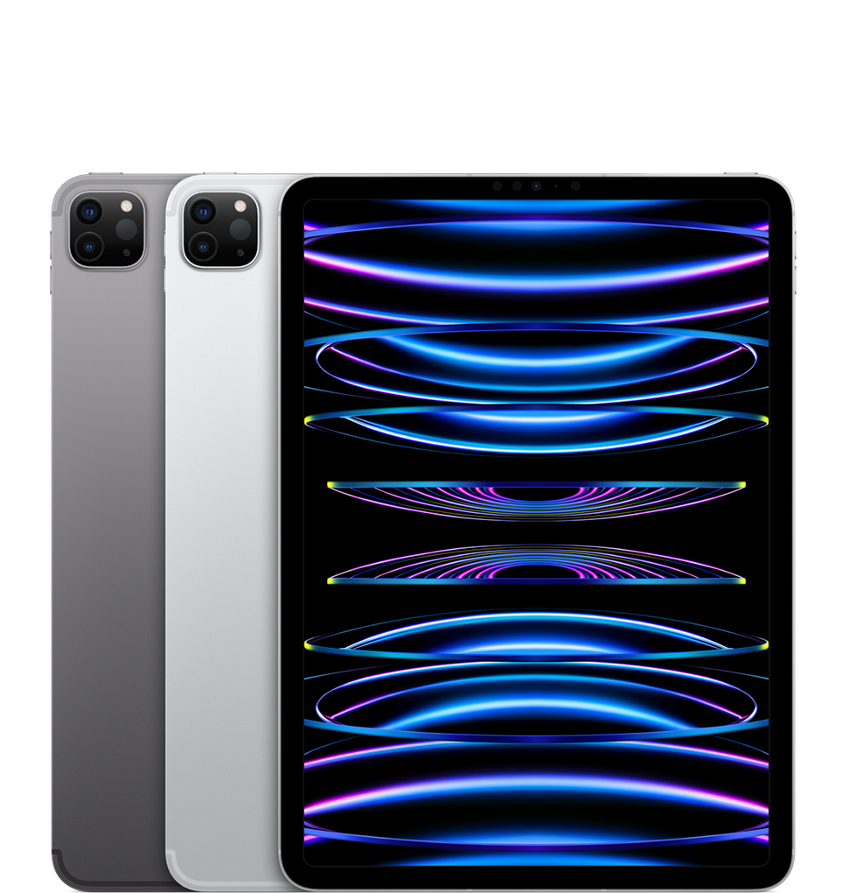
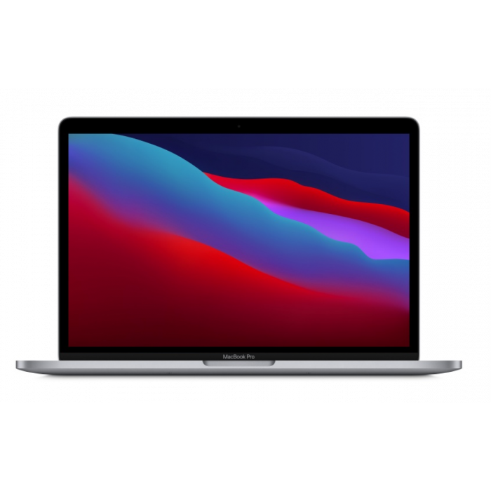

Los diferentes productos de Apple
Los productos de Apple son conocidos por su innovación y estilo.
Desde los elegantes iPhones hasta las potentes computadoras Mac,
Apple ofrece tecnología de vanguardia y una experiencia de usuario
excepcional. Con sus iPads versátiles y el Apple Watch inteligente,
satisfacen las necesidades de comunicación, entretenimiento y productividad
de los usuarios más exigentes.

Ipad Pro
La herramienta perfecta para profesionales.
Productividad y entretenimiento fusionados.
El futuro de la tecnología móvil en tus manos ahora.

MacBook Pro
La herramienta perfecta para profesionales.
Productividad y entretenimiento fusionados.
El futuro de la tecnología móvil en tus manos ahora.

Apple watch ultra
La herramienta perfecta deportes.
Productividad y entrenamiento fusionados.
El futuro de la tecnología móvil en tus manos ahora.
Informacion